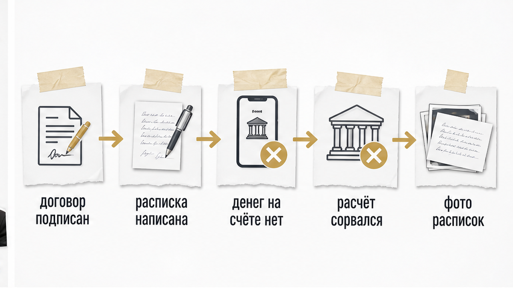
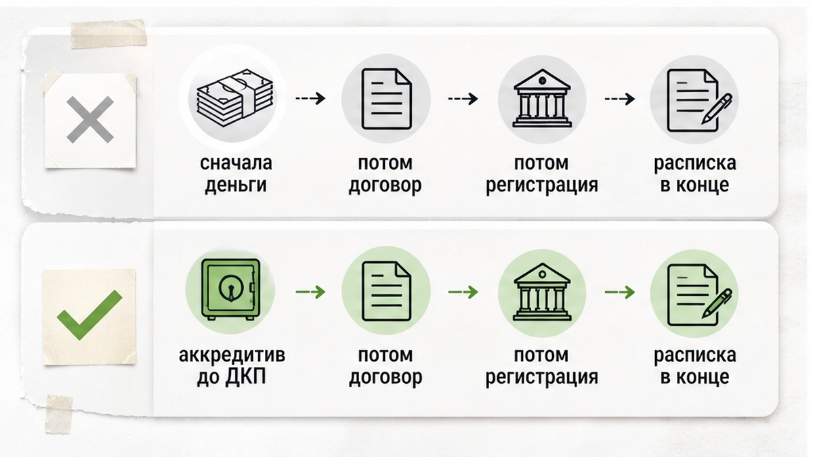
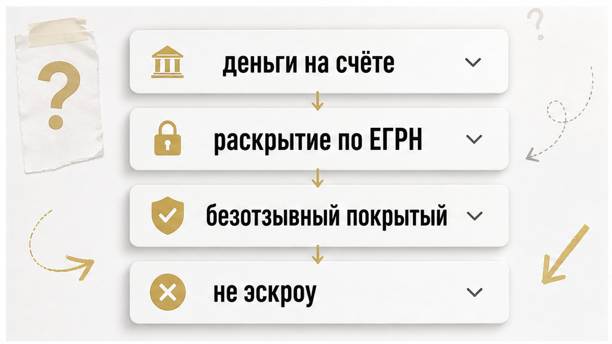

«Расписку написали — денег нет».
Так описывают ситуацию, когда сделка в Тюмени уже кажется закрытой: нотариус, подписи, усталые стороны — а на счёте продавца пусто.
На бумаге расчёт якобы прошёл. В реальности банк его не провёл.
Одна сторона держит договор купли-продажи. Другая — фотографию расписки. И обе не понимают, кто прав и можно ли вообще расторгать сделку.
Обычный человек видит нотариальную сделку.
Риэлтор спрашивает:
«А где деньги?»
Я веду сделки в Тюмени от звонка до регистрации. На финишной прямой чаще всего слышу: «сначала подпишем — в банке разберёмся».
Не разберётесь. Разберётесь уже с подписанным договором и пустым счётом.
Расскажу, какой порядок расчётов закрывает ловушку «бумага есть — счёт пуст» — до того, как кто-то напишет расписку без денег.
Быстрый инсайт. Сначала — реальное размещение денег под контролем: аккредитив, депозит нотариуса или СБР. Потом — договор и регистрация. Расписку — только после фактического поступления средств на счёт продавца или раскрытия аккредитива. Нотариальная форма договора деньги не держит, если отдельно не открыт депозит нотариуса.
Перед авансом имеет смысл сверить соседние риски: чеклист Росфинмониторинга при сделке и разбор старого фонда, по которому банк может отказать — без этого расписка и подписанный договор не спасут от пустого счёта.

«Ну мы же у нотариуса всё оформили».
Оформили — не значит рассчитались.
По публичному разбору кейса (пересказ, не судебный акт): стороны подписали нотариальный договор купли-продажи до банковского расчёта. Продавцы по инерции написали расписки о получении полной суммы — как принято «закрыть сделку» у нотариуса.
Затем все поехали в отделение банка открывать или раскрывать аккредитив.
Там расчёт сорвался: конфликт вокруг условий, скандал у окна. Деньги продавец не получил.
Асимметрия доказательств: расписки остались у продавцов, но покупатели успели их сфотографировать. При споре у каждой стороны свой набор бумаг, а банковского следа о перечислении нет.
Нотариальная форма договора не заменила правильную последовательность расчётов. Нотариус удостоверяет волю сторон, но не удерживает деньги, если отдельно не открыт депозит нотариуса.
Вердикт: нельзя подписывать договор и расписку, рассчитывая «завтра откроем аккредитив» или «в банке разберёмся». Сначала — реальное размещение денег под контролем. Потом — договор и регистрация. И только после фактического поступления средств — подтверждение получения.

«А если продавец в командировке — подпишем сейчас, деньги завтра?»
Завтра — это уже риск с подписанным договором и распиской «на будущее».
Алгоритм, который закрывает риск «бумага есть — счёт пуст»:
Расписку часто пишут у нотариуса до поездки в банк — как ритуал завершения сделки.
При аккредитиве единственное надёжное подтверждение оплаты — банковское раскрытие после записи в ЕГРН, а не бумага «деньги получил».
Обычный человек видит подписанный договор.
Риэлтор спрашивает:
«А где банковский след?»
«Раз нотариус, значит деньги в безопасности».
Нет. Нотариальное удостоверение и депозит нотариуса — разные услуги.
Типичная ошибка: путать нотариальное удостоверение договора и депозит нотариуса. Первое — про форму и удостоверение воли. Второе — про удержание суммы сделки на специальном счёте нотариуса до регистрации перехода права.
Тариф депозита нотариуса по ст. 22.1 Основ законодательства о нотариате: 0,5% от суммы, минимум 1 000 ₽, максимум 20 000 ₽. Деньги лежат у нотариуса до регистрации, затем перечисляются продавцу.
Это отдельная услуга. Если её не заказали — нотариус деньги не держит. Как в кейсе выше.
Для сделки в Тюмени имеет смысл заранее — до аванса и до подписания — решить: аккредитив, депозит нотариуса или СБР. И зафиксировать выбор в договоре: банк, срок, точное условие раскрытия.
Вердикт: нотариус не касса. Без депозита — только бумага.

«Аккредитив — это же сложно, проще расписку».
Проще — до первого спора.
Внутрироссийский аккредитив регулируется ст. 867–873 ГК РФ; банковские правила — Положение Банка России от 29.06.2021 № 762-П (актуально в 2026 году).
Механизм для вторички такой:
Для вторичного рынка рекомендуют покрытый безотзывный аккредитив: деньги зарезервированы на счёте, покупатель не может отозвать их в одностороннем порядке. Это защита продавца от ситуации «подписали — а потом передумали и забрали деньги».
Эскроу по ФЗ-214 — инструмент новостроек (ДДУ). На вторичке вместо эскроу используют аккредитив, СБР или депозит нотариуса.
Путать их не стоит: при покупке готовой квартиры в Тюмени эскроу-счёт застройщика не применяется.
«Откроем на месяц — хватит же».
Хватит — пока Росреестр не приостановит регистрацию.
Регистрация перехода права: при электронной подаче — 3 рабочих дня, через МФЦ — до 9 рабочих дней. Плюс риск приостановки Росреестром.
На практике срок аккредитива закладывают с запасом — 60–90 дней, а не 30. Особенно если цепочка сделок, ипотека или сложный объект.
Открыть аккредитив на 30 дней при риске приостановки — одна из частых ошибок: срок истекает раньше, чем банк получит основание для раскрытия.
Условие раскрытия не привязано к региону, но жёстко привязано к формулировке в заявлении. В Тюмени те же федеральные сроки; отличие — заранее согласовать отделение банка и тариф до аванса, чтобы в день подписания не искать «свободное окно».
Средства на аккредитиве не страхуются АСВ как вклад до 1,4 млн ₽ в полном объёме сделки. При крупных суммах выбирают надёжный банк и уточняют условия письменно — цифры в обзорах расходятся.
«А сколько это стоит?»
Зависит от банка и суммы. Ориентиры на 2026 год (уточнять в конкретном отделении письменно):
Федеральные банки — Сбер, ВТБ, Т-Банк и др. — в Тюмени работают по тем же схемам.
Банковская ячейка возможна, но только с чёткими условиями: кто и при каких документах получает доступ, что считается основанием для выдачи. Без этого ячейка слабее аккредитива и депозита нотариуса.
Сравнение трёх основных инструментов для вторички в Тюмени:
При ипотеке банк-кредитор часто требует свой сценарий: аккредитив или расчёт через ипотечный банк после регистрации залога. Смешивать «ипотечный банк сказал одно, а в договоре написали другое» — прямой путь к приостановке.
Согласовать схему с кредитным специалистом до подписания договора купли-продажи, не после.
«Ну расписку же написали — значит, оплатил».
Написали — не значит получил. И не значит, что спор не откроют.
Расписка о получении денег не застрахована от оспаривания всей сделки. Если договор купли-продажи признают недействительным — недееспособность продавца, мошенничество, влияние третьих лиц — расписка аннулируется вместе с договором.
В Тематическом обзоре ВС РФ № 12/2026, утв. Постановлением Президиума ВС РФ от 01.07.2026 № 15А/2026 (п. 11), это прямо разбирается в контексте рисков для покупателя.
Отдельный прецедент: определение ВС РФ от 10.03.2026 № 84-КГ26-1-К3 — сделка, совершённая под влиянием мошенников, признана недействительной; реституция: покупатель возвращает квартиру. Расписка «оплатил» такую ситуацию не лечит.
Если продавец написал расписку, а денег не получил — покупатель может ссылаться на фото или копию как на доказательство оплаты. Продавцу без банковского следа сложнее доказать неполучение.
Расписку с печатным текстом и одной подписью проще оспорить (почерковедческая экспертиза по одной подписи); полностью рукописный текст юристы чаще считают устойчивее — но это не замена безналичному расчёту через банк.
В расписке, если её всё же оформляют после реального поступления средств, указывают: ФИО и паспорт, сумму цифрами и прописью, адрес или кадастровый номер объекта, ссылку на конкретный договор и дату, цель платежа («оплата по договору купли-продажи…»).
Вердикт: расписка — дополнение после факта. Не замена банковскому следу.
При передаче квартиры до регистрации по п. 5 ст. 488 ГК РФ она может оставаться в залоге у продавца до полного расчёта, если в договоре не прописано иное.
Это дополнительный рычаг для продавца, но не отменяет необходимость контролировать деньги до подписания.
Покупатель, который перевёл наличные «в руки» и получил только расписку, остаётся в более слабой позиции, чем сторона с аккредитивом и условием раскрытия по ЕГРН.
Если сделка зашла в тупик по схеме из кейса — договор подписан, расписка есть, банк расчёт не провёл — действовать нужно сразу. Пока стороны не разошлись с взаимными претензиями.
Расписка «на будущее» не создаёт обязанность банка перечислить деньги и не заменяет судебного разбирательства, если одна сторона настаивает на исполнении договора, а другая — на его недействительности.
Банковский след — выписка по аккредитиву, платёжное поручение с депозита нотариуса — остаётся главным доказательством факта расчёта.
В Тюмени нет «особого» аккредитива — работают федеральные правила. Практические отличия на месте:
Для покупателя квартиры в Тюмени на вторичном рынке связка «аккредитив + выписка ЕГРН как условие раскрытия» — стандарт безопасного расчёта в 2026 году. Расписка — дополнение после факта, не замена.
Для покупателя и продавца на вторичке в Тюмени:
Принцип «деньги продавцу после регистрации» — базовый для безопасной покупки. Расписка до этого момента создаёт иллюзию расчёта и усложняет спор, если банк расчёт не провёл.
Материал — ориентир для сторон сделки, не индивидуальная юридическая консультация. Тарифы банков, сроки и доступность СБР в конкретном отделении нужно запрашивать письменно — цифры в обзорах расходятся.
Кейс с нотариусом и сорванным расчётом в банке — пересказ публичного поста, не судебный акт; детали конфликта со слов участников.
Аккредитив, депозит нотариуса и СБР не заменяют проверку квартиры: выписка ЕГРН, обременения, дееспособность продавца, согласия супруга и опеки при долях детей — отдельный блок рисков до аванса. Безопасный расчёт работает только вместе с проверкой объекта.
Технически можно — но это тот самый риск «расписку написали, денег нет». Деньги нужно разместить под контролем до подписания договора или зафиксировать аванс отдельным соглашением с понятным зачётом.
Нотариальное удостоверение — про форму и волю сторон. Депозит нотариуса — отдельная услуга: деньги лежат на специальном счёте до регистрации. Без депозита нотариус деньги не держит.
Нет. Эскроу по ФЗ-214 — инструмент новостроек (ДДУ). На вторичке в Тюмени — аккредитив, СБР или депозит нотариуса.
С запасом: 60–90 дней, а не 30. Учитывайте сроки регистрации (3–9 рабочих дней) и риск приостановки Росреестром.
Слабо. Без банковского следа продавцу сложнее доказать неполучение, а покупатель может ссылаться на фото расписки. Расписка не создаёт обязанность банка перечислить деньги.
Напишите в Telegram, в MAX по номеру +7 922 001 65 05 или позвоните — разберём порядок расчёта до подписания.
Разберём порядок: аккредитив, депозит или СБР — до того, как кто-то напишет расписку без денег на счёте.
Материал проверен: Святослав Шакин, личный риэлтор в Тюмени. Материал — ориентир для сторон сделки, не индивидуальная юридическая консультация. Тарифы банков, сроки и доступность СБР в конкретном отделении нужно запрашивать письменно — цифры в обзорах расходятся.